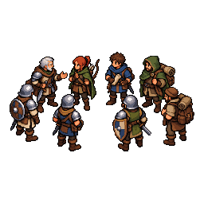
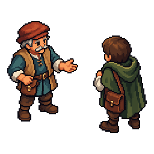
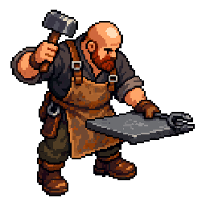

Оглянуться

Хаб · художественный предпросмотр
Переключай эталон и 16-битную версию каждой сцены. Увеличение помогает рассмотреть пиксельную сетку.
Яркая палитра
Новый вариант ещё готовится. Эталон можно открыть по отдельной ссылке.
Приглушённая палитра
Новый вариант ещё готовится. Эталон можно открыть по отдельной ссылке.
Выбор пользователя


